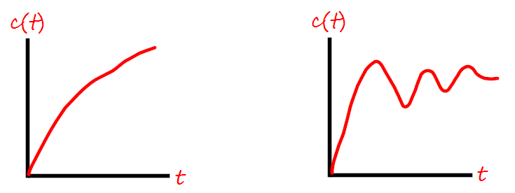
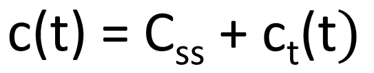

HOME BLOG EBOOKS ABOUT CONTACT SHOP
Time response analysis of a Control system means to analyze the variation of the output of a system with respect to time. The output behavior with respect to time should be within specified limits to have satisfactory performance of the system. The complete base of stability analysis lies in the time response analysis. In practical systems, abrupt changes don’t usually occur and the output takes a definite time to reach its final value. This time taken varies from system to system and depends on many factors.
The total output response can be analyzed in two separate parts. First is the part of the output during the time it takes to reach its final value. The second is the final value attained by the output, which will be close as possible to the desired value, if things go as planned.
Suppose you want to travel from city A to city B. It will take finite time to reach city B. This time depends on whether we travel by a bus or a train or a plane. Similarly, whether we reach city B or not depends on a number of factors like weather, condition of road etc. So in short we can classify the output as,
So the effectiveness and accuracy of the system depends on the final value reached by the system, which should be close to desired value as possible and also that final value should be reached in smoothest manner possible. The final value achieved by the output is called the Steady state value, while the output variations within the time taken to steady state is called the transient response of the system.
The transient response of a system is that part of the response that dies to zero after some time as the system reaches its final value. It is denoted as ct(t). In stable systems, the transient response inevitably dies out after some time.
Typically, the transient response is exponential or oscillatory in nature.

The steady state response is that part of the time response that remains after the transients have died down. It is denoted as Css. The steady state response indicates the accuracy of the system and the difference between the desired output and the actual output is known as the steady state error (ess).
Hence the total time response of the system can be expressed as,
